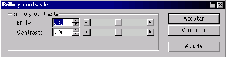

Next: Valores RGB
Up: Modificar
Previous: Invertir
Índice General
Para modificar estas características se elige en el menú [Colores] la opción [Brillo/Contraste],
y en el cuadro de diálogo Brillo y contraste se regulan a voluntad.
Figura 5.55:
Brillo y contraste
|

|
5.55
Proyecto Cursos - LuCAS - http://lucas.hispalinux.es/htmls/cursos.html